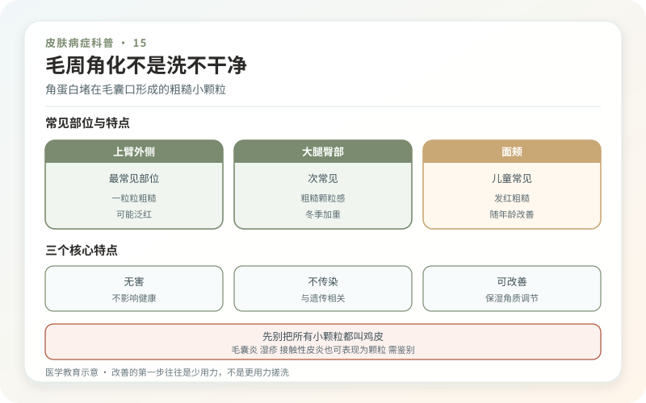
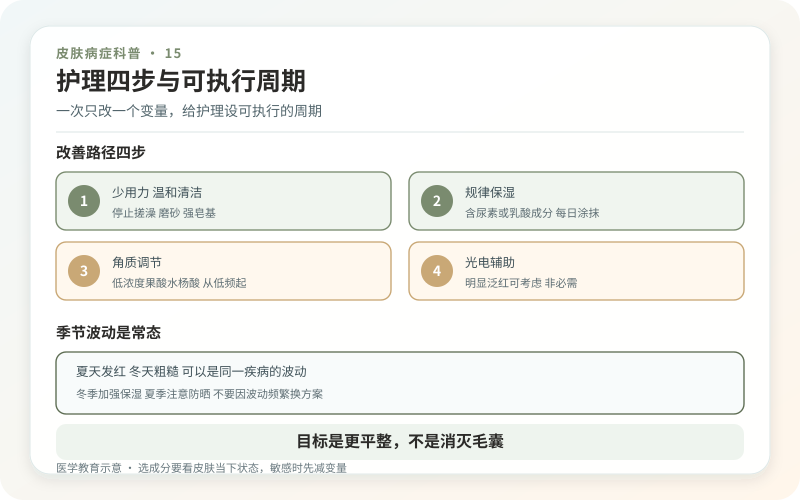

毛周角化症就是大家常说的“鸡皮肤”：毛囊口出现一粒粒肤色、红色或褐色小丘疹，摸起来像细砂纸，常见于上臂外侧、大腿、臀部和面颊。它与角蛋白在毛囊口堆积有关，常有家族倾向，也常和皮肤干燥、特应性体质一起出现。
它不是因为洗澡没搓透，更不是细菌或螨虫感染，因此不会传染。冬季干燥时常更明显，年龄增长后部分人会自然减轻，但也有人长期存在。

先别把所有小颗粒都叫鸡皮
闭口粉刺多见于皮脂丰富区域，可伴黑头和炎性痘；毛囊炎常有红肿、疼痛、瘙痒或脓头；湿疹可成片发红脱屑；维生素缺乏并不是毛周角化最常见解释。面颊型毛周角化还可能明显泛红，若盲目按痤疮高强度刷酸，常越治越刺激。
皮肤科通常通过外观和触感诊断，不需要抽血或“毛囊排毒检测”。突然大面积出现、伴明显瘙痒疼痛、脓疱或全身不适时，应重新评估，而不是只加大去角质。

改善的第一步，往往是少用力
洗澡时间别太长，水温别太高，使用温和清洁产品；洗后趁皮肤微湿涂润肤霜。含尿素、乳酸、水杨酸或其他角质调节成分的产品可能让颗粒更平滑，但需要从低频、小面积开始。刺痛、脱屑明显时先暂停，回到保湿。
搓澡巾、磨砂膏、刷子和挤压只能暂时磨平表面，同时制造炎症和色沉。尤其在大腿和上臂，反复抓挤后留下的褐印可能比原本颗粒更显眼。
外用药和光电能做到什么？
医生可能根据程度使用维A酸类、角质软化剂或短期抗炎药。维A酸类有刺激性，备孕及妊娠期需要特别谨慎，不能把面部祛痘药随意大面积涂身体。若主要困扰是持续发红、粗糙或色素，某些激光和光疗可能改善部分维度，但通常不能永久改变体质。
任何宣称“一个疗程打开毛囊、终身根治”的项目都值得怀疑。治疗停止后颗粒可能逐渐回归，维持护理往往比一次猛攻更重要。光电还可能带来色沉、色减、烫伤和费用负担，应先明确目标。
给护理设一个可执行的周期
选一种保湿加一种角质调节产品，连续观察四到六周，每周拍一张相同光线的照片。不要三天没变就同时更换四种酸。若皮肤已经干裂、发红或有湿疹，先控制炎症，再考虑颗粒质地。
衣物摩擦也会放大粗糙感，可选择柔软、透气面料，运动后及时更换汗湿衣服。防晒能减少炎症后色沉，但不用把手臂全年包得密不透风。
毛周角化影响外观，却不伤害健康。把目标从“每个毛孔都消失”改成“更平滑、少红、少干痒”，通常更现实。皮肤有纹理不是治疗失败，温和而长期才是这类问题真正的解法。
护理方案一次只改一个变量
想知道什么有效，最简单的方法不是把磨砂膏、刷酸、身体乳和搓澡巾一起上，而是先固定温和清洁与保湿，再每两到四周只调整一个变量。记录部位、粗糙感、红痒、脱屑和刺痛，同一光线拍照。刚涂完变亮、洗澡后暂时发红，都不算稳定疗效。若出现灼痛、裂口、明显炎症，先停刺激步骤，回到保湿修复；“越痛越有效”是典型误区。
选成分要看皮肤当下状态
含尿素、乳酸或水杨酸等角质调理成分的产品，可能改善粗糙，但浓度越高，刺激风险通常也越高。儿童、特应性皮炎人群、备孕孕期或皮肤已有破损者，不要照搬成人网红方案，应先咨询医生或药师。外用维A酸类可能有帮助，但属于更需要规范评估的选择，不能把面部祛痘用法直接复制到大面积身体皮肤。
目标是“更平整”，不是消灭毛囊
毛周角化常有遗传倾向，也会随季节、湿度和摩擦波动。有效护理通常是长期管理，停用后重新粗糙不等于“产生依赖”。把目标定为减少摸起来的颗粒、降低红痒、穿衣更舒适，会比追求镜头下完全无毛孔更现实。若皮疹突然广泛加重、明显疼痛化脓或外观与以往不同，需要面诊排除毛囊炎等其他问题。
夏天发红、冬天粗糙，可以是同一疾病的波动
季节变化时不要立刻把全套产品推翻。先看湿度、日晒、出汗和衣物摩擦，再调整保湿厚度与角质调理频率。身体乳能改善触感，不会改变遗传底色；即使坚持护理仍有少量颗粒，也不代表清洁失败或皮肤“不健康”。